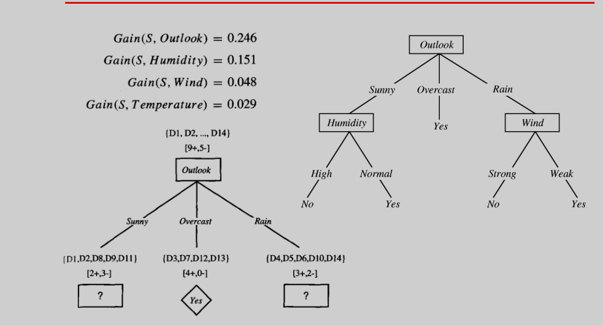

小象的机器学习
数据基础
线性代数
概率与统计
预习：
pmf 与 pdf
pmf:在概率论中，概率质量函数PMF是离散随机变量在各特定取值上的概率。
pdf:概率质量函数与概率密度函数不同之处在与：概率密度函数对连续随机变量定义，本身不是概率，只有对连续随机变量的取值进行积分后，才是概率。
概率
频次概率（frequentist）通过重复采样来衡量，也叫客观概率
主观概率，对事物的主观概率，集合论来阐述概率。在空间中占有的大小
条件概率
独立：P(A,B) = P(A)P(B)
非独立:P(A,B) = P(A|B)P(B)
贝叶斯公式
P(H|D) = P(D|H)P(H)/P(D)
随机变量
随机变量
期望
期望就是加权的平均
E[X]
函数的期望
E[g(X)]
样本方差
协方差
协方差 > 0 正相关 <0 负相关， 独立 = 0
联合概率分布
概率密度函数PDF
不同概率密度函数，表示不同的特性，某些概率密度函数更能符合事物概率的本性
如身高：正态分布
概率密度分布
伯努力分布
正面如反面的分布
P(X = 1) = p P(X = 0) = 1-p = q
二项分布
掷硬币100次，出现10次为正面的概率
每一次是伯努力分布，当合在一起几次的时候，就是二项式分布了
多项式分布
掷骰子100次，某种组合的概率
gamma函数
阶乘
Gamma分布
从0开始，到正无穷的分布
Beta分布
反正态的分布，碗样
beta分布在0-1之间
poisson分布
正态分布
Log正态分布
指数分布
simpson’s 悖论
机器学习的数据基础
线性回归
cost Function
J(theta) =
经典机器学习模型
KNN
KNN概述
它是无参数的，不需要训练。主要两个参数K值与距离
可以用作分类，也可以用于回归K值选择
K值过小容易过拟合，过大准确行不高，一般是奇数
K值并不一定是奇数，偶数可以看距离Nearest,距离选择
Naive Bayes
- 贝叶斯原理
注意先验（Prior），似然估计（likehood） - 朴素贝叶斯
朴素贝叶斯意思是各个特征之间独立决策树
- 决策树概述
决策树其实包括:决策树生成,决策树剪裁2部分,在本课程中只学习了决策树生成.主要原因在如今的机器学习中,需要决策树需要结合集成学习来使用更好.而集成学习并不需要深的决策树. - 信息熵增益
信息量 log(1/p(x))
信息熵entropy 信息量的期望 p(x)log(1/p(x))累加
信息熵增益 整体信息熵 - 某个特征的信息熵 决策树实例
Gini Index
对比
集成学习
概述
主要学习Bagging与BoostingBagging
Bagging可以并发来训练，它从原始的样本集中，多次放回重复采样一定比例（如70%）的样本，然后在这些样本是去训练各自的模型。然后再将这些模型取平均值即可。常见的实例是随机森林，就是它的基础模型是用决策树。
Boosting
Boosting是串行训练的集成学习，它会对样本增加一个权重系数，对每次分类错误的样本增加它的权重，以期在下一次分类中受到重视。将每次循环学习出的样本按一定权重（与准确率有关）加权相加得到最终的模型。算法：
有错误率计算出一个中间变量alpha,这个alpha控制分模型的权重，然后由alpha去计算更新样本权重W。
从数学角度，alpha是一个对数几率，几率控制准确率越高，占用权值越大。对数应该是为了在更新样本权重W时使用的e的alpha指数，便于计算。
线性模型与Logist回归
本节主要讲了最小二乘、似然估计与最小二乘的关系、Logist回归。
其中最小二乘的2种方法：一种是算数法，一种是几何法。
最先二乘
算数方法

几何方法
似然估计
假设线性模型的误差是符合正太分布：
Logist回归
logist回归可以认为是将线性模型映射到0-1之间，通常用来做分类，>0.5认为是1，反之是0
Ridge与LASSO
Ridge与LASSO都是在模型基础之上增加了约束项，其中Ridge增加了对大小的约束,LASSO增加了对稀疏性的约束。
- Ridge
- LASSO
几何解释
SVM
本节主要讲述拉格朗日乘子法、线性SVM、非线性SVM
拉格朗日乘子法
拉格朗日乘子法解决的问题可以描述为：在约束条件下，目标函数的最值问题。
它的理论依据是目标函数最值取得，是在目标函数梯度与约束条件的梯度相同的时。问题：
解：
不等式优化
不等式优化，增加了对问题的描述线性SVM
线性SVM原则是，找到最大间隔的边界分离正反数据。
推导
问题

计算：